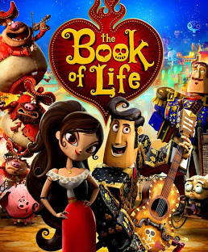

The Book of Life is a vibrant, heartwarming animated film released in 2014, produced by Reel FX Animation Studios. Directed by Jorge R. Gutiérrez, it is a stunning celebration of Mexican culture, traditions, and the power of love and memory. The movie stands out with its unique visual style inspired by folk art, mariachi music, and the colorful traditions of Día de los Muertos (Day of the Dead).
The story follows Manolo Sánchez, a bullfighter with a passion for music, and his childhood friend Joaquín, who both love the same woman — María Posada. Their lives become intertwined with a wager made between two deities: La Muerte, who rules the Land of the Remembered, and Xibalba, the ruler of the Land of the Forgotten. The bet determines which young man María will choose. Manolo is sent on an extraordinary journey through the afterlife, where he must face his fears, stay true to his heart, and find his way back to the living world — proving that love and memory are stronger than death.
The film features an incredible voice cast:
The Book of Life received widespread critical acclaim for its breathtaking animation, rich storytelling, and respectful portrayal of Mexican culture. Reviewers praised its bold, colorful design that looks like moving folk art, as well as its touching message about honoring family and remembering those we love. Audiences of all ages have cherished the film for its beautiful music, heartfelt romance, and the way it teaches children about Día de los Muertos in a warm, accessible way. It has become a beloved classic and a meaningful tradition for many families around the world.